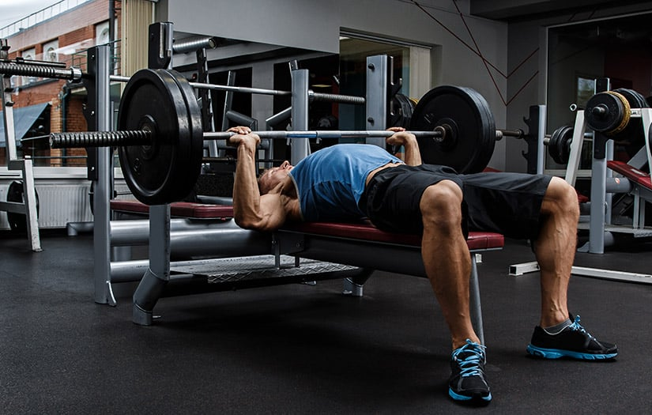

A testmozgás különböző típusait bátran keverhetjük, hogy minden területen fejlődhessünk, azonban a legjobb eredményeket akkor érhetjük el, ha egyszerre egy adott területre koncentrálunk. A három alapvető pillér izomépítés, kardió és nyújtás mindegyike elengedhetetlen a teljes körű fizikai fejlődéshez.
Kardió edzés: A fogyás motorja
A kardió edzés célja a szív- és érrendszer erősítése, miközben hatékonyan égeti a kalóriákat, ezáltal segítve a fogyást. Ilyen gyakorlatok közé tartozik a futás, biciklizés, úszás vagy akár a gyors séta. Az állóképesség javulásán túl a kardió csökkenti a szív- és érrendszeri betegségek kockázatát, valamint fokozza az energiaszintet.
A kardió során a pulzus megemelkedik, így a szív több vért pumpál az izmokhoz, biztosítva számukra az oxigént és a tápanyagokat. Az intenzívebb légzés pedig növeli a tüdő kapacitását. Mindez serkenti az anyagcserét, ami az edzés után is fenntartja a kalóriaégetést.
Tippek a hatékony kardióhoz:
Váltogasd a tempót, például egy futás során kombinálj sprintet és lassabb szakaszokat (HIIT).
Heti 3-5 alkalom 30-45 perces edzés elegendő kezdők számára.
Figyelj a hidratációra edzés előtt és után!
Nyújtás: Rugalmasság és regeneráció
A nyújtás célja az izmok rugalmasságának megőrzése, a mozgástartomány növelése és a sérülések megelőzése. Edzés előtt dinamikus nyújtás ajánlott (például kartempók, láblendítések), míg edzés után a statikus nyújtás segít ellazítani az izmokat és gyorsítani a regenerációt.
A nyújtás serkenti a vérkeringést az izmokban, ami javítja a tápanyag- és oxigénellátást. Csökkenti az izomfeszültséget, és elősegíti a tejsav gyorsabb lebontását, amely az intenzív edzések után halmozódik fel az izmokban. Emellett a stressz szintjét is csökkentheti.
Tippek az izomnöveléshez:
Mindig meleg izmokat nyújts, ne kezdj hideg izmokkal!
Tartsd a nyújtó pozíciót legalább 20-30 másodpercig, de ne erőltesd túl.
Napi 10-15 perc nyújtás már látványosan javíthatja a rugalmasságot.
Erősítő edzés: Izomnövelés és testformálás
Az erősítő edzések célja az izomzat növelése és erősítése. Ezzel nemcsak a test tónusa javul, hanem az anyagcsere is gyorsabbá válik, hiszen az izmok több energiát használnak fel nyugalmi állapotban is. Az erősítéshez súlyzók, gumiszalagok vagy akár a saját testsúly is elegendő lehet.

Az erősítő edzés során az izmok mikrosérüléseket szenvednek, amelyek regenerálódáskor erősebbé válnak. Ez a folyamat, az úgynevezett „szuperkompenzáció”, az izomnövekedés alapja. A hormontermelés is fokozódik, például a tesztoszteron és a növekedési hormon szintje emelkedik, amelyek hozzájárulnak az izomtömeg növeléséhez.
Tippek az izomnöveléshez:
Kezdj alapgyakorlatokkal, például guggolás, fekvőtámasz, húzódzkodás.
Fokozatosan növeld a súlyokat vagy az ismétlésszámot.
Adj időt a regenerációra, és pihenj legalább 48 órát az egyes izomcsoportok edzése között.